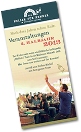

Weinselige Termine, die Sie nicht verpassen sollten
Der Keller für Kenner
Veranstaltungen 1. Halbjahr 2013
Januar 2013 | |
Mo., 14.01.2013
|
Hildegard – Ein Abend für alle Sinne!Hildegard von Bingen ist eine der großen und weisen Frauen des Mittelalters, die nun von Papst Benedikt XVI. zur Kirchenlehrerin erhoben wurde. Erleben Sie eine facettenreiche, szenische Lesung über ihr Leben und Werk. Es lesen: Heike Mayer-Netscher, Ute Leonhardt, Stefanie Pieroth-Heil und Reinhard Horn. Lesung: 5,00 € Dazu können Sie köstliche Hildegard-Spezialitäten vom Buffet genießen (Preis pro Person: 15,00 €). |
Do., 17.01.2013 |
„Geh’n Se zum Lache in de Keller!“Wolle mer´se roilosse? Hildegard Bachmann und Herbert Völkner, ein lustiges Gespann, fastnachtlich und mundartlich unnerwegs. Eintritt: 11,00€ |
Fr., 25.01.2013 |
„Voll akustisch und lecker“Das Trio „SELTSAM!“ wird das neue Programm und ihre neue CD „FULL DIMENSION OF LIFE“ vorstellen. Die drei Musiker: Wolle von Seltsam, Holger von Seltsam und Sabine Lambert, erzählen die Geschichten hinter den Geschichten und stellen ihre Kompositionen mit Gesang, Gitarre, Saxofon, Querflöte und Cajon vor. Sie durchwandern musikalische Landschaften des Pops, Jazz und Souls akustisch und in ihrer eigenen Art ... eben SELTSAM! Michels Keller wird bei gutem Essen und leckeren Tröpfchen in wohltuende Schwingungen versetzt. In diesem Sinne wird es: „Voll akustisch und lecker“. Eintritt: frei |
Mo., 28.01.2013 |
Wein und Wörter - Bücherei am Dom im Weinhaus Michel„Dolce far niente“ - Von einer, die auszog das Genießen zu lernen" mit Eric Haugh und Wencke Matthai (Theater 3D) Lesung: 4,00 € |
Februar |
|
Do., 07.02.2013 |
FassenachtBei Michels geht die Post ab!Do., 07.02.2013 Weiberfassenacht – die Mädels sinn los! Mer feiern drei Daache dorsch unn mache nur kurz zum Putze zu: |
Do., 28.02.2013 |
„Unter Trümmern“ – Lesung mit LewwerkneppJürgen Heimbachs neuer Kriminalroman „Unter Trümmern“ spielt im Mainz des Jahres 1946. Er erzählt darin zum einen die Geschichte des nach zwölf Jahren in seine Heimatstadt zurückgekehrten Polizisten Paul Koch, dem die neuen Kollegen und Vorgesetzten mit Misstrauen begegnen und der zunächst den Tod eines Wachmanns aufklären muss. Zum anderen ist da die Geschichte von Dorle Becker aus Gonsenheim, die ihren schwer verletzt aus dem Krieg heimgekehrten Sohn versorgen und die nötigen Medikamente auf dem Schwarzmarkt besorgen muss. Dabei spielen auch „Lewwerknepp“ eine nicht ganz unerhebliche Rolle. Lesung: 5,00 € |
März |
|
Mi., 06.03.2013 |
Lothar Schöne liest aus:„Schall und Rauch“- schwarze Geschichten Ein literarischer Cocktail für Freunde und Liebhaber des schrägen, des schwarzen Humors. Gemixt aus Spannung, hintergründigem Witz und einer bösen Prise Zyankali geschüttelt und gerührt von Lothar Schöne. Lesung: 5,00 € |
Mo., 11.03.2013 |
Wein und Wörter – Bücherei am Dom im Weinhaus Michel"Maghrebinische Literatur gegen das literarische Einerlei" - Beruf und Berufung Donata KinzelbachDer Verlag Donata Kinzelbach ist der einzige in Deutschland, der sich seit 1987 auf die Herausgabe von Literatur aus dem Maghreb – also Algerien, Marokko, Tunesien – in deutscher Übersetzung spezialisiert hat. Aktuelle Informationen zur Lesung finden Sie auch auf: www.bistum-mainz.de/buecherei-am-dom Lesung: 4,00 € |
Do., 21.03.2013 |
After-Wörk-PardyNach em anstrengende Arbeitsdaach habbe die Michels noch was zum Tschillen! Treffe Se nette Leit, drinke Se foine Woi unn genieße Se Michels gude Küch! Eintritt: frei |
April |
|
12.04.2013 |
„Vunn allem Ebbes“Hildegard Bachmann liest "The Best of" aus ihren Büchern. Dem Volk auf´s Maul geschaut. Lesung: 8,00 € |
Sa., 13.04.2013 |
„C’est si bon“ – Wein und Chansons in Michels Keller!Matthias Kippert (Gesang, Gitarre), Axel Lorth (Gesang, Gitarre, Cajon) und Stefan Kortenbusch (Gesang, Klavier) sind verliebt in die französische Chansonkultur. Als Trio „Les Voisins“ singen und spielen sie einfühlsame Bearbeitungen von Chanson-Klassikern, z.B. von Charles Aznavour, Edith Piaf, Charles Trenet oder aus dem Repertoire von Yves Montand. Eine charmante und zu Herzen gehende Liebeserklärung an eine großartige Musiktradition, die von den „Voisins“ auch mit neuen Ideen belebt wird. Eintritt: 10,00 € |
Mo., 22.04.2013 |
Peter Jackob liest: „Kneipen, Pech und Pannen“Kleine Katastrophen aus dem Leben des Mainzer Kommissars Jacques „Schack“ Bekker. Lesung: 5,00 € |
Mai |
|
Mi., 01.05.2013 - |
Tipp: Genießen Sie Michel-Wein am Rhein!
|
Mo., 13.05.2013 |
Wein und Wörter – Bücherei am Dom im Weinhaus MichelAktuelle Informationen zur Lesung finden Sie sechs Wochen vor dem Termin auf: www.bistum-mainz.de/buecherei-am-dom Lesung: 4,00 € |
Fr., 24.05.2013 |
Sommer à la carte - Weine für Terrasse und FerienfeelingZur schönsten Jahreszeit präsentieren wir unsere Sommerweinprobe. Amorettsche, Schnudedunker, Goldisch Drobbe ... zu sommerlichen Leckereien aus unserer Küche! Erschmecken Sie Ihre Favoriten unter unseren Weinpersönlichkeiten! Preis pro Person: 25,00 € |
August |
|
Fr., 30.08.2013 |
„Tschillen“ mit MichelwoiWeil’s am Rhein so schön war - Michels Wein-Lounge im Keller! Entdecken Sie Neues. Probieren Sie sich nach Lust und Laune durch unser Weinsortiment. Wie auf den Mainzer Weintagen, rockt Wolle dazu leidenschaftlich die Gitarre. Musik und Wein: 18,00 € Heute geben wir Ihnen 10 % Rabatt auf Ihre Weinbestellung. Unser „Woi-Shuttle“ bringt samstags die Weinauswahl zu Ihnen nach Hause. |
September |
|
Mo., 09.09.2013 |
"Kleine Fluchten" - oder "Wie Rotwein einer Maus das Leben retten kann"Literarische Ausflüge weg vom Trampelpfad der Alltagsroutine, gelesen von der Fernsehjournalistin Judith Kauffmann Kleine Fluchten - oder: Wie Rotwein einer Maus das Leben retten kann. Es geht ihr um literarische Ausflüge weg vom alltäglichen Trampelpfad, Erlebnisse und Welterkundungen, die das Leben reicher, tiefer, auch genußvoller machen. Der Wein spielt da eine wichtige Nebenrolle, aber auch Zür'cher Geschnetzeltes, sinnliche Erfahrungen verschiedenster Art, Träume kommen vor. Die begeisterte Leserin bedient sich bei Lieblingsautoren - von Shakespeare bis Vicki Baum, von Goethe bis Colette, von Ludwig Harig bis Thomas Mann. Judith Kauffmann ist in Rheinland-Pfalz als Moderatorin und Autorin des SWR bekannt geworden. Mehr als 20 Jahre lang hat sie die Landesschau Rheinland-Pfalz moderiert, stand sieben Jahre lang in der Kochsendung „Himmel un Erd" an der Seite Johann Lafers vor der Fernsehkamera und stellt seit 2006 wöchentlich in ihrer Landesschau-Reihe „Judith trifft" Menschen vor, die jeder/jede für sich ganz normal und doch besonders sind. Aktuelle Informationen zur Lesung finden Sie auch auf: www.bistum-mainz.de/buecherei-am-dom Lesung: 5,00 € |
Sa., 14.09.2013
|
Mogontiacum – auf den Spuren der Römer – eine außergewöhnliche StadtführungDie Bedeutung von Mogontiacum in der Römischen Antike lässt sich im heutigen Mainz nur erahnen. Klaus Willms macht Geschichte in einer spannenden Stadtführung lebendig: Drususstein, Römisches Bühnentheater, Kästrich ... Die Michels überraschen Sie unterwegs mit Wein und römischen Leckereien - ein kulturelles und kulinarisches Vergnügen! Preis pro Person: 28,00 € |
Mi., 18.09.2013 |
„Plaudereien aus dem Setzkästchen“ – Gutenberg zu Gast im Weinhaus MichelIn einer szenischen Lesung nimmt der Poesieverein „Dichterpflänzchen“ seine Zuschauer mit auf eine vergnügliche und spannende Zeitreise in das 15. Jahrhundert. Es ist gelungen, einige verloren geglaubte Dokumente aus Straßburg, Mainz und Eltville zu entdecken, deren Inhalt ein neues Licht auf das private Leben des Erfinders der Buchdruckkunst wirft. „Meine Erfindung wird die Welt verändern,“ hatte Gutenberg einst zum Stadtschreiber gesagt und ihn dazu gedrängt, das „doch ausführlich in der Burgschänke bei einem guten Glas Wein zu besprechen“. Auf Ihr Wohl! Lesung: 8,00 € |
Oktober |
|
Fr., 04.10.2013 |
„Unplugged im Keller!“ *Das Trio „SELTSAM!“ erzählt die Geschichten hinter den Geschichten und stellt ihre Kompositionen mit Gesang, Gitarre, Saxofon, Querflöte und Cajon vor. Sabine Lambert, Holger Förschler und Wolle Moses, durchwandern musikalische Landschaften des Pops, Jazz und Souls akustisch und in ihrer eigenen Art. Unser Keller wird bei gutem Essen à la carte und leckeren Tröpfchen in wohltuende Schwingungen versetzt. www.seltsam-music.jimdo.de Eintritt: 10,00 € |
Do., 10.10.2013 |
2. After-Wörk-PardyNach em anstrengende Arbeitsdaach habbe die Michels noch was zum Tschillen! Treffe Se nette Leit, drinke Se foine Woi unn genieße Se Michels gud Küch! Eintritt: frei |
Mi., 16.10.2013 |
„Vum Quetschekuche zum Handkäs mit Musigg“ - So sinn die Rhoihesse!Hildegard Bachmann und Herbert Völkner, unser rhoihessisches Gespann, werfe en humorvolle Blick auf unseren Alldaach. Es wird gesunge unn gebabbelt, gelacht unn gestrunzt – im Keller vunn Michels sinn mer ganz unner uns! Eintritt: 11,00 € |
Sa., 26.10.2013 |
Herbst-Weinprobe
|
Do., 31.10.2013 |
Liebe, Leidenschaft und Wein – ein Abend mit Edgar Allan PoeHeike Mayer-Netscher und ihr Team werden Sie an diesem Abend zu den Abgründen des Edgar Allan Poe mitnehmen. Poe war ein Genie (zumindest hielt er sich dafür), ein Lebemann, ein Hochstapler und Frauenheld, vielleicht Alkoholiker. Sein Leben war mindestens genauso spannend wie seine Geschichten. Mit einer Mischung aus biographischen Details und Ausschnitten aus seinem Werk entführen wir Sie einen Abend lang in die gruselige Welt des E. A. Poe. Dazu präsentiert Ihnen das Weinhaus Michel schaurig-leckere Herbstspezialitäten à la carte. Lesung: 5,00 € |
November |
|
Do., 07.11.2013 |
Rheinhessen liestDie Autorin Christina Stein liest aus ihrem Psychothriller „Stumme Angst“ Lesung: 5,00 € |
Mo., 11.11.2013 |
Wein und Wörter – Bücherei am Dom im Weinhaus MichelGrimms Märchen mit dem 3D-Theater Aktuelle Informationen zur Lesung finden Sie sechs Wochen vor dem Termin auf: www.bistum-mainz.de/buecherei-am-dom Lesung: 5,00 € |
Fr., 29.11.2013 |
Aufgrund der großen Nachfrage gleich zwei Abende mit ...
|
Dezember |
|
Fr., 06.12.2013 |
„Vum Nikelos, Engelscher unn Spritzgebackenem“Woihnachte in de Altstadt, bei Kerze unn Woi, gonz unne im Keller, was konn scheener noch soi, do heert mer Geschichde, vum Mann mit dem Bart, vunn Engelscher, Schlitte, Woihnachtliches besonnerer Art. Weihnachtliche Geschichten, lustig und besinnlich liest für Sie Hildegard Bachmann. Lesung: 8,00 € |
Download Flyer 1. Halbjahr/ 2013
„Bei uns unne im Keller finne Se Woi unn Kuldur discht beienanner.
Aach des leiblische Wohl kimmt hier net zu kurz."
Karten für alle Veranstaltungen erhalten Sie bei uns im Weinhaus.
Gerne reservieren wir Ihnen Ihre Termine telefonisch, die Karten sollten jedoch bitte eine Woche vor Veranstaltung bei uns im Weinhaus abgeholt werden.
Schauen Sie doch immer mal wieder auf unsere Webseite, hier finden Sie die aktuellen Termine und viele Informationen.
Ach übrigens:
Ob mit 30 oder 60 Personen, im historischen Gewölbekeller lässt es sich wunderbar feiern. Geburtstage, Hochzeiten, Geschäftsessen, Seminare oder Weihnachtsfeiern – in den Mauern des ehemaligen Klosters Jakobsberg fühlt man sich rundum wohl.
Sprechen Sie uns an, wir beraten Sie gerne.
*Ab einer Stunde vor Veranstaltung beginnt der Einlass und es werden bereits Getränke und Speisen serviert!